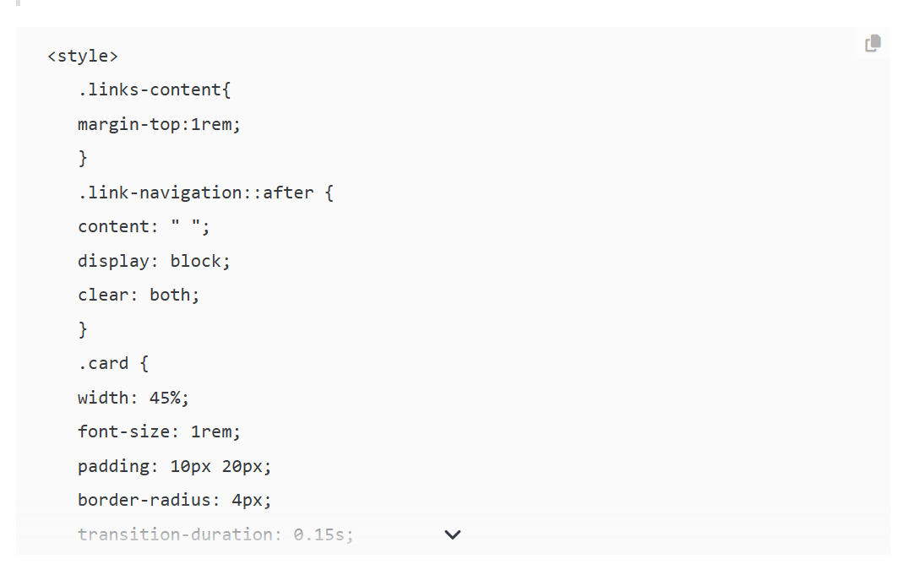

神必小笔记
2024-09-05
想试着下更新hexo和next的时候提示npm可以更新了,然后去更新npm
结果先是淘宝的源炸了,然后是nvm报错panic: runtime error: index out of range [3] with length 3
总之又折腾了下nvm的更新,然后发现没有直接更新的办法,最后试了curl和wget都不行只有覆盖安装了
太久没写前端或者node导致的
2024/09/06 update:
?今天用hexo的时候炸了,最后发现是环境变量没了,但是昨天更新完还能用啊
2024-09-06
今天打算炸的是python,主要氵群的时候看到他们在聊一些编程语言,PL人真的好可怕
总之先拿conda里的试手了,conda支持命令一键更新的
conda update python
不过搜到的说是只会更新到3.x.y的y最新版本,不会更新x,需要在执行一次才行,但我怕环境炸了就只执行了一次
然后http err了
不过又跑了一次最后到3.11.9了,不是预期的3.12
之后拿本地的更新,但是直接安装的木有找到pip直接更新的指令被一键部署惯坏的新一代cs人
最后先导出requirements然后直接卸载安装了,又又发现不支持直接下载旧版的库,犯蠢了
因为本地没有太多重要的库,干脆手动下载了
总结还是go和rust这种一键更新自带包管理器的更新好多了
或者是我姿势不对吧
2024-11-27
神秘bug
好久没写博客,因为上次写的时候换成了hexo-renderer-pandoc的markdown渲染用来写数学公式,结果就是友链页面使用的渲染莫名炸了
Finisky
Garden的markdown内嵌HTML方式
变成了下面这种直接嵌入一段html代码,百思不得,也没查到问题所在

在hexog生成的html里看到整个style都被当成code用precode包裹起来了,但没找到会造成这种情况的代码
最后误打误撞把所有的空格都删了之后就正常显示了,代价是变得特别丑(不过也没人看原版md)
// 大概变成这样了
<div class="card">
<img class="ava" src="" />
<div class="card-header">
<div>
<a href=""></a>
</div>
<div class="info"></div>
</div>
</div>然后学到了直接上传的图片可以用../../image/xxxxx.png来代替,因为用了加密插件所以路径要多套一层
懒得找图床了()